The traditional classroom lectures include theoretical topics such as algorithms, programming languages, computer architecture, operating systems, software engineering, and database management. These lectures are supplemented using visual aids, case studies, and group discussions to facilitate a deeper understanding of the topics covered.
Duration
2 Years (4 Semesters)
Affiliation
PES University
Campus
Ring Road (RR) Campus
Admissions Test
PES Entrance Process
#1
University in Karnataka
A+
NAAC Accredited
#1
B-School in Karnataka
2nd
Most Preferred B-School
Get In Touch
Have questions about Master of Computer Applications (MCA) admissions?
Share a few details and our admissions counsellors will walk you through eligibility, fees, scholarships and the application timeline — no obligation.
- Fast Response — a counsellor calls back within 24 hours.
- One-on-One Guidance — personalised help with eligibility and documentation.
- No Obligation — ask questions before you decide to apply.
Enquire Now
Fill this in and we'll reach out shortly.
Overview
Master of Computer Applications (MCA)
The MCA program is intensified to introduce the theoretical concepts of computer science and its practical applications. The MCA graduates will be well competent professional practitioner and can suitably occupy positions such as System Analyst, System Designers, Software Engineers, Application Programmers, Network/Database Administrators etc. They can also pursue further education and research in computer science or related fields. The department also offers PhD programme in Computer Applications.
The Department Vision is to excel in imparting quality education, create ethically strong, creative, analytical, technically superior, knowledgeable, innovative, and inquisitive minds.
The Department Mission is to become dynamic and vigorous knowledge hub with an exposure to state of art in computer technologies and to empower students in becoming skilled and ethical entrepreneurs while endorsing free and open source software learning and usage and also, to promote and adapt professional development in a perpetual demanding environment and nurture Megaminds for Competent Accomplishments.
The department has made a tremendous impact on the learning experiences of the students in the last two years. Every subject is designed to be application oriented and most of the courses are practical based.

Why PES University
Key Differentiators of This Program
The MCA program at PESU provides a strong foundation in computer science while emphasizing application development, emerging technologies, practical problem-solving and industry-oriented learning. The curriculum progresses from core computing concepts to advanced professional electives.
- 1
Strong Computing Foundation
Students develop core competencies through courses such as Programming with Python, Data Structures, Databases and Applications, Algorithms Analysis and Design, Data Communication and Networking and Software Architecture and Engineering.
- 2
Full-Stack and Enterprise Application Development
Application development is covered through Flask, MERN, Java, Next.js, Hibernate, REST APIs and database integration. Courses such as Full Stack Web Development, Java Enterprise Application Development and Web Application Frameworks II prepare students to build scalable web and enterprise applications.
- 3
Data Science and Artificial Intelligence
Students are introduced to Data Science and Advanced Visualisation, Machine Learning, Natural Language Processing, Computer Vision, Deep Learning and Intelligent Systems. Practical work involves data analysis, visualization, model development and intelligent application building.
- 4
Cybersecurity and Digital Forensics
Security-focused courses include Cyber Security Essentials, Digital Forensics and Incident Response and Ethical Hacking. Students gain exposure to secure coding, cryptography, vulnerability assessment, penetration testing, incident response, forensic investigation and security reporting.
- 5
Cloud Computing and DevOps
Cloud Services, DevOps and Modern Cloud Service Architectures provide experience in cloud infrastructure, Docker, Kubernetes, CI/CD pipelines, DevSecOps, microservices, serverless computing and cloud-native application development.
- 6
Networking and Infrastructure
Data Communication and Networking, Advanced Internetworking and Network Management develop knowledge of network protocols, routing, wireless networks, infrastructure monitoring and network administration.
- 7
Responsive UI and UX
The Responsive UI/UX course covers HTML5, CSS3, TypeScript and Tailwind CSS. Students learn to design accessible, responsive and reusable interfaces aligned with current web standards.
- 8
Choice-Based Professional Electives
Students can select advanced courses based on their interests. Options include Natural Language Processing and Computer Vision, Cyber Security Essentials, Cloud Services, Responsive UI/UX, Advanced Internetworking, Digital Forensics, DevOps, Network Management, Deep Learning, Ethical Hacking and Modern Cloud Service Architectures.
- 9
Experiential and Project-Based Learning
Hands-on exercises, case studies, mini-projects and application-oriented assignments are embedded across the curriculum. Students work with real-world development, analytics, networking, cybersecurity and cloud-computing scenarios.
- 10
Industry-Relevant Tools and Technologies
Practical exposure is provided through Python, Flask, SQLAlchemy, MongoDB, React, Node.js, Next.js, TypeScript, Java, Hibernate, Docker, Kubernetes, AWS services, Selenium and cybersecurity tools.
- 11
Research and Emerging Technology Orientation
Advanced courses in machine learning, natural language processing, computer vision, deep learning, cloud-native systems and cybersecurity introduce students to current industry practices and research-oriented problem-solving.
Learning Approach
Program Design
coursePercentageCreditsDistribution
01Preliminary
0
3% – 6%
02Foundation
19
30% – 40%
03Core
39
30% – 40%
04Elective
14
10% – 20%
05Project Work / Self Study
18
6% – 12%
Total100.009090 (C)
Is It For You?
Who Should Pursue This Program?
Master of Computer Applications (MCA) is a postgraduate degree program that is designed for individuals who want to pursue a career in the field of computer applications.
- Students with a Bachelor’s degree in computer science or related fields who want to pursue higher studies and advance their career in the field of computer applications.
- IT professionals who want to enhance their knowledge and skills in areas such as software development, database management, and computer networking.
- Individuals who want to pursue a career in the field of software development, web development, data analytics, or cybersecurity.
- Entrepreneurs or business owners who want to start their software development or IT consulting companies and need to gain knowledge and skills to manage these businesses.
- MCA is an excellent course for those who want to deepen their understanding of computer applications and develop advanced technical skills for career growth and success in the IT industry.
Core Subjects
Focus Areas
Programming and Software Development
Python, Java, TypeScript, data structures, algorithms, object-oriented programming, concurrent programming and modern application development.
Database Management
Relational and NoSQL databases, SQL, MongoDB, database design, query processing, JDBC, Flask-SQLAlchemy and Hibernate.
Software Architecture and Engineering
Software processes, requirements engineering, architectural design, Agile methods, testing, project planning and quality assurance.
Data Science and Artificial Intelligence
Advanced data visualization, machine learning, natural language processing, computer vision, deep learning and intelligent systems.
Full-Stack and Enterprise Web Development
Flask, MERN, React, Node.js, Express.js, Next.js, Java enterprise applications, REST APIs, authentication and database integration.
Networking and Infrastructure
Data communication, network protocols, routing, wireless networks, software-defined networking, cloud networking, network automation, infrastructure monitoring and intelligent network operations.
Cloud Computing and DevOps
Cloud services, AWS, virtualization, Docker, Kubernetes, CI/CD, DevSecOps, microservices, serverless computing and cloud-native architectures.
Cybersecurity and Digital Forensics
Secure coding, cryptography, vulnerability assessment, ethical hacking, incident response, evidence analysis and security reporting.
Responsive UI/UX
Responsive interface development using HTML5, CSS3, TypeScript, Tailwind CSS, accessibility principles and modern web standards.
Curriculum
Course Structure
- Programming with Python
- Data Structures Using C
- Databases and Applications
- Software Architecture and Engineering
- Data Science and Advanced Visualization
- Algorithms Analysis and Design
- Data Communication and Networking
- Full Stack Development
- Machine Learning
- Elective I
- Soft Skills / Aptitude and Reasoning Skills / Yoga / Arts / Competitive Programming
- Java Enterprise Application Development
- Generative AI
- Elective II
- Elective III
- Capstone Project Phase I
- Special Topic / Swayam /MOOC
- Special Topic / Swayam /MOOC
- Internship
- Capstone Project Phase 2
Choose Your Path
Specializations
StreamTitle of Course
Data Intelligence and Machine Learning
Natural Language Processing and Computer VisionStream AnalyticsAgentic AI
Security Essentials
Cyber security EssentialsDigital Forensics and Incident ResponseEthical Hacking
Cloud Essentials
Cloud ServicesDevOpsMicroservices and Serverless Applications
Modern Web Technologies and Applications
Responsive UI/UXServer-side Application DevelopmentIntelligent Web Applications
How We Teach
Pedagogy Method
A combination of traditional classroom lectures, practical lab sessions, and project-based learning is used to provide students with a comprehensive understanding of the field of computer applications.
In addition to classroom lectures, we also include practical lab sessions wherein students are encouraged to apply the concepts they have learned in class to real-world scenarios. These lab sessions involve working on individual as well as group projects, experimenting with programming languages and software tools, or testing and analyzing code.
Project-based learning is also commonly used in our course, where our students work on projects that require them to identify a real-world problem, design and develop a software solution, and then present their findings and recommendations to their peers and to the faculty.
The overall emphasis is on hands-on learning, critical thinking, and problem-solving skills, in addition to theoretical knowledge.
Beyond the Classroom
Extra - Curricular/Co - Curricular Activities
Inter and Intra college HackathonsInter and intra college IdeathonsHands-on skill building workshopsResearch Conferences Seminars and PresentationsCultural Events and FestsCoding ChallengesIndustry Visits and Field Trips
Careers
Future Career Prospects After Completing The Program
The MCA program prepares graduates for diverse careers in application development, artificial intelligence, data science, cloud computing, cybersecurity, networking and enterprise technologies. Major career opportunities include:
Full-Stack Developer
Graduates can develop complete web applications using the MERN stack, React, Node.js, Express.js, MongoDB, Flask and Next.js. Opportunities are available in product-based companies, service-based companies and technology start-ups.
Enterprise Application Developer
Knowledge of Java, JDBC, Hibernate, JavaBeans, web frameworks and database integration prepares graduates to build secure and scalable enterprise applications.
Python and Backend Developer
Python programming, Flask, REST APIs, Flask-SQLAlchemy, structured data handling and cloud deployment prepare students for backend development and API-development roles.
Data Analyst and Data Scientist
Data Science and Advanced Visualisation develops skills in data preparation, statistical analysis, dashboards, time-series analysis, anomaly detection and decision-support applications.
Artificial Intelligence and Machine Learning Engineer
Machine Learning, Natural Language Processing, Computer Vision and Deep Learning prepare graduates to build predictive models, intelligent systems and AI-based applications.
Cloud Engineer
Cloud Services and Modern Cloud Service Architectures provide experience in AWS, virtualization, cloud storage, networking, monitoring, serverless computing, microservices and cloud-native application development.
DevOps and DevSecOps Engineer
Practical knowledge of Git, Docker, Kubernetes, Helm, CI/CD pipelines, infrastructure automation and security integration prepares students for DevOps and DevSecOps roles.
Cybersecurity Analyst
Cyber Security Essentials develops knowledge of secure coding, cryptography, network security, vulnerability management, digital-payment security and cybersecurity
frameworks.
Digital Forensics and Incident Response Analyst
Graduates can pursue roles involving digital evidence acquisition, memory analysis, network forensics, log analysis, malware investigation, incident response and forensic reporting.
Ethical Hacker and Penetration Tester
Ethical Hacking provides practical exposure to network scanning, vulnerability assessment, OWASP risks, web application security, mobile security, IoT security and penetration-testing methods.
Network Engineer and Network Administrator
Data Communication and Networking, Advanced Internetworking and Network Management prepare students for careers in network configuration, routing, wireless communication, infrastructure monitoring and network administration.
Database Developer and Database Administrator
Databases and Applications covers relational databases, SQL, MongoDB, data modelling, query processing, indexing, transactions and distributed database concepts.
UI/UX and Front-End Developer
Responsive UI/UX develops skills in HTML5, CSS3, TypeScript, Tailwind CSS, responsive design, accessibility and reusable interface development.
Software Architect and Quality Engineer
Software Architecture and Engineering prepares graduates for requirements analysis, architectural design, Agile development, software testing, quality assurance and project-planning roles.
Placements
Placement Opportunities & Career Assistance
The number of companies that visit our campus to hire Graduates of Computer Applications cross the century mark. A bunch of new companies get enrolled in to list of companies visiting the campus year on year. Some of the prominent companies that hire our students are:
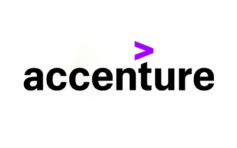
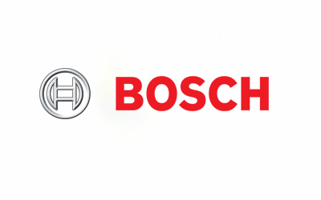
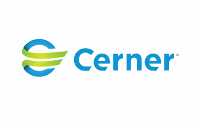
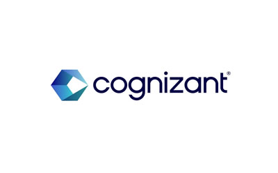
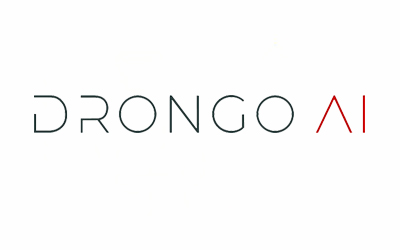
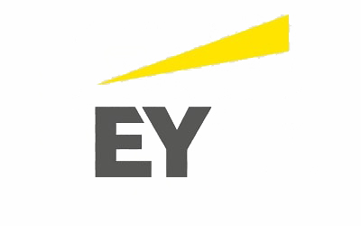
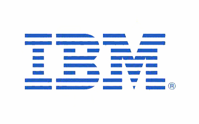
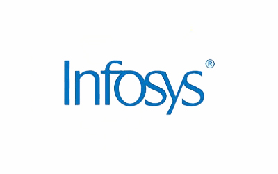
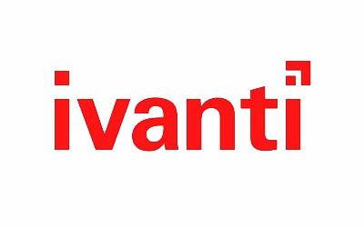
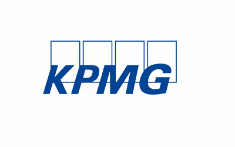

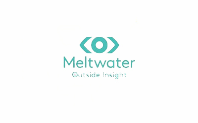
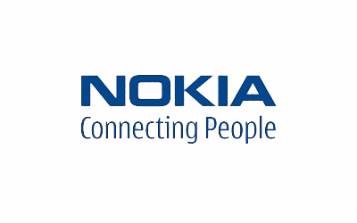
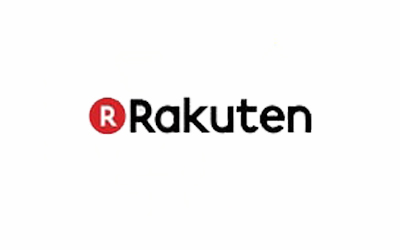
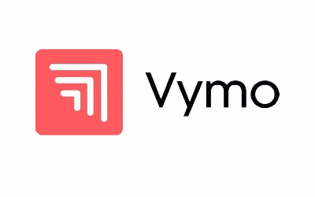
Placement Support
PES University Provides Placement Assistance In Various Formats/ Events
01
Placement Orientation
An orientation is organized by the University and at the Department level to make the students aware of the Placement policies. The policies are framed such that every student gets fair opportunity in making their career.
02
Pre-Placement Training
The University has a unique campus-wide program called Pre-Placement Training, a unit of PESU I/O. A team of final year students conduct a series of tests, both aptitude and technical twice a week.
03
Alumni Interaction
The Department organizes Alumni interactions with the students to assist them in preparing for Placements right from Resume writing to facing interviews.
04
Invited Guest Lectures
Sessions are conducted by inviting industrial trainers to help the freshers crack the aptitude tests.
05
Placement Coordinator
There is a dedicated coordinator who deal with the Placement Activities at the departmental level to assist the students in getting more exposure to the industry expectations and real-world applications.
06
Industry Interactions
Students are taken to various technology summits to understand the industry potentials and its future trends.
Financial Support
Merit scholarships, awarded on performance
Over ₹140 crores in merit scholarships have been given to PES University students since 2014.
Merit Scholarships
Awarded on CGPA / SGPAScholarship
50%
Prof. MRD Scholarships
Merit Certificate + 50% Tuition Fee Refund for Top 5% of the Students based on their CGPA.
Scholarship
40%
Prof. CNR Rao Scholarships
Merit Certificate + 40% Tuition Fee Refund for the next 20% of the Students based on their SGPA.
Scholarship
7.75+
Distinction Awards
Merit Certificate for Students securing 7.75+ SGPA.
PES Loyalty Program
Awarded on family / institutional ties, every year of studyLoyalty
30%
PES Employees
Children of full-time staff, 5+ years employment.
Loyalty
20%
PES Institution Students
Graduates of any PES institution or sister concern.
Loyalty
10%
Siblings of Students
Siblings of currently enrolled PES students.
Loyalty
10%
Alumni Family
Siblings and children of PES University alumni.
University Highlights
Recognition beyond the programme
The accreditations and rankings behind PES University as a whole.
Ranking
#1
University in Karnataka
Among new universities under 5 years, ranked by KSURF.
Accreditation
A+
NAAC Accredited
PES University holds NAAC's top-grade accreditation nationally.
Ranking
#1
B-School in Karnataka
Times of India B-School Rankings, 2021.
Recognition
2nd
Most Preferred B-School
Second only to IIM Bangalore among B-School aspirants, per Times of India.